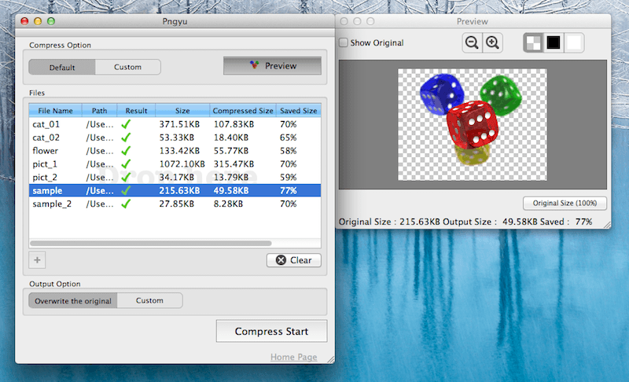
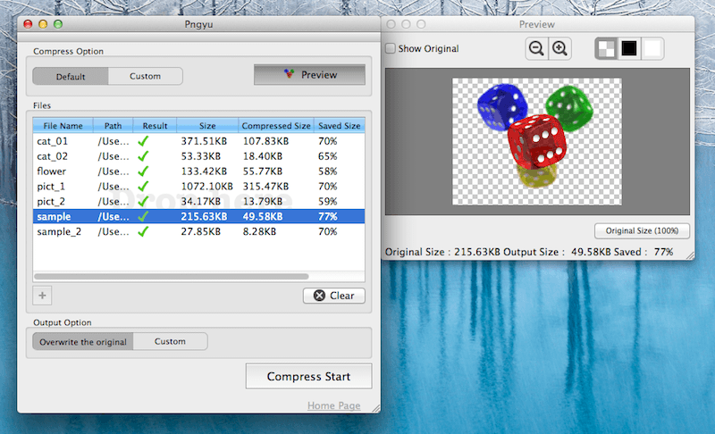

Pngyu β ver

Pngyuは簡単なマウス操作のみで複数のPNG形式の画像ファイルを一括で圧縮し、大幅なファイルサイズ節約を実現するツールです。
PNGファイルの圧縮エンジンにはImageAlphaやTinyPNGでも使用されている
pngquantを使用しています。
pngquantでは24bit/32bitフルカラーのPNGファイルを優秀な減色アルゴリズムを用いて8bitインデックスカラーに変換することで、
圧縮を実現します。

Pngyuは簡単なマウス操作のみで複数のPNG形式の画像ファイルを一括で圧縮し、大幅なファイルサイズ節約を実現するツールです。
PNGファイルの圧縮エンジンにはImageAlphaやTinyPNGでも使用されている
pngquantを使用しています。
pngquantでは24bit/32bitフルカラーのPNGファイルを優秀な減色アルゴリズムを用いて8bitインデックスカラーに変換することで、
圧縮を実現します。
使い方は簡単です。
まずPngyuを起動し画面中央のDrop hereと書かれたエリアに圧縮したいPNGファイルをドラッグ&ドロップしてください。
あとは画面下部のCompress Startボタンをクリックすれば圧縮処理が始まります。
デフォルトでは入力したファイルに上書き保存されます。
圧縮後の出力先やファイル名を変更したい場合はOutput OptionをCustomに変更して出力先を変更することができます。
圧縮の細かな設定をしたい場合はCompress OptionをCustomに変更することで圧縮設定の変更が可能になります。
またリストからファイルを選択してPreviewボタンをクリックすればプレビューウィンドウが現れます。
プレビューウィンドウでは現在の設定で圧縮した場合の結果が確認できます。
※圧縮には減色処理が伴うため圧縮後は元の画像に戻すことは不可能となります。
重要なファイルの圧縮の際には事前にバックアップを行なってください。
またこのソフトウェアを使用した結果より生じた損害に対していかなる責任も負いかねます。
Development started 2013/04/15
Version0.9.0β mac 2013/04/24
Version0.9.0β mac 2013/04/25
Mac用β初回リリース